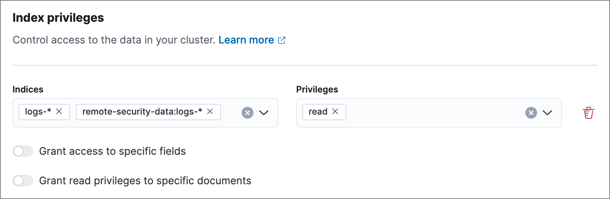
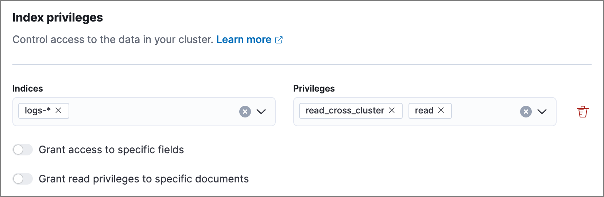
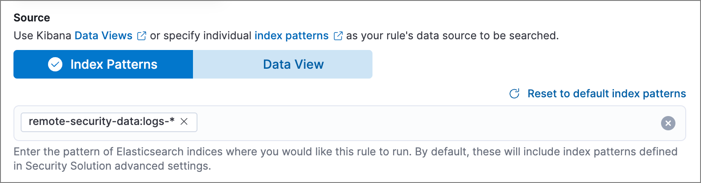

Cross-cluster search and detection rules
editCross-cluster search is an Elasticsearch feature that allows one cluster (the local cluster) to query data in a separate cluster (the remote cluster). Elastic Security’s detection rules can perform a cross-cluster search to query data in remote clusters.
Set up cross-cluster search in detection rules
editThis section explains the general process for setting up cross-cluster search in detection rules. For specific instructions on each part of the process, refer to the linked documentation.
-
On the local cluster, establish trust and set up a connection to the remote cluster, using one of the following methods. With either method, note the unique name that you give to the remote cluster, because you’ll need to use it throughout this process.
- Add remote clusters using API key authentication — Clusters must be on Elastic Stack version 8.14 or later.
- Add remote clusters using TLS certificate authentication
-
On both the local and remote clusters, create a role for cross-cluster search privileges, and make sure the two roles have identical names. Assign each role the following privileges:
-
Local cluster role: Assign the
readprivilege to the indices you want to search, using both the local and remote index patterns for each index. To specify a remote index, use the pattern<remote_cluster_name>:<index_name>.For example, if the remote cluster’s name is
remote-security-dataand you want to query thelogs-*indices, include both thelogs-*andremote-security-data:logs-*index patterns and assign them thereadprivilege. -
Remote cluster role: Assign the
readandread_cross_clusterprivileges to the indices you want to search. You don’t need to include the remote cluster’s name here.
-
-
On the local cluster:
-
Assign the role you just created to a user who you want to configure your cross-cluster detection rules.
- This step ensures that the privileges to read remote indices are applied from the user to the rule itself. When a user creates a new rule or saves edits to an existing rule, their current privileges are saved to the rule’s API key. If that user’s privileges change in the future, the rule’s API key will not update until you manually update it. Refer to Update a rule’s API key for details.
- This user must also have the appropriate privileges to manage and preview rules.
-
As this user, configure a rule that searches the remote indices: create or edit a rule, then enter the
<remote_cluster_name>:<index_name>pattern in the Source section.If the rule’s Source uses a data view instead of index patterns, you must define the data view for cross-cluster search separately, using the
<remote_cluster_name>:<index_name>pattern. Refer to Use data views with cross-cluster search for more on defining a data view. -
(Optional) Preview the rule to test its expected results.
The rule preview uses the current user’s cross-cluster search privileges, while the rule itself runs using the privileges snapshot saved in its API key the moment the key is created. The preview results could be different from the rule’s actual behavior if the user performing the preview has different privileges than what’s saved in the rule’s API key.
- Save and enable the rule.
-
Update a rule’s API key
editEach detection rule has its own API key, which determines the data and actions the rule is allowed to access. When a user creates a new rule or changes an existing rule, their current privileges are saved to the rule’s API key. If that user’s privileges change in the future, the rule does not automatically update with the user’s latest privileges — you must update the rule’s API key if you want to update its privileges.
A rule’s API key is different from the API key you might have created for authentication between local and remote clusters.
To update a rule’s API key, log into the local cluster as a user with the privileges you want to apply to the rule, then do either of the following:
- Edit and save the rule.
-
Update the rule’s API key manually:
- Go to Kibana → Stack Management → Rules.
- Use the search box and filters to find the rules you want to update. For example, use the Type filter to find rules under the Security category.
-
Select the rule’s actions menu (…), then Update API key.
To update multiple rules, select their checkboxes, then click Selected x rules → Update API keys.